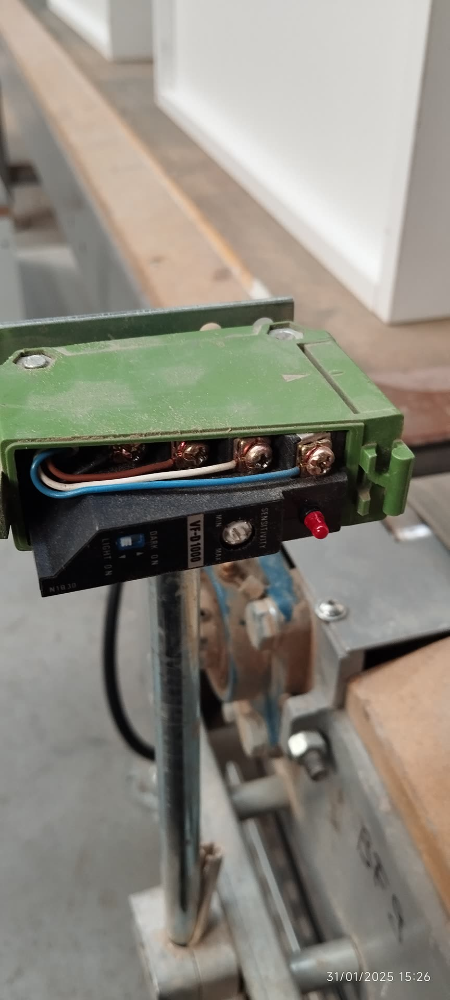
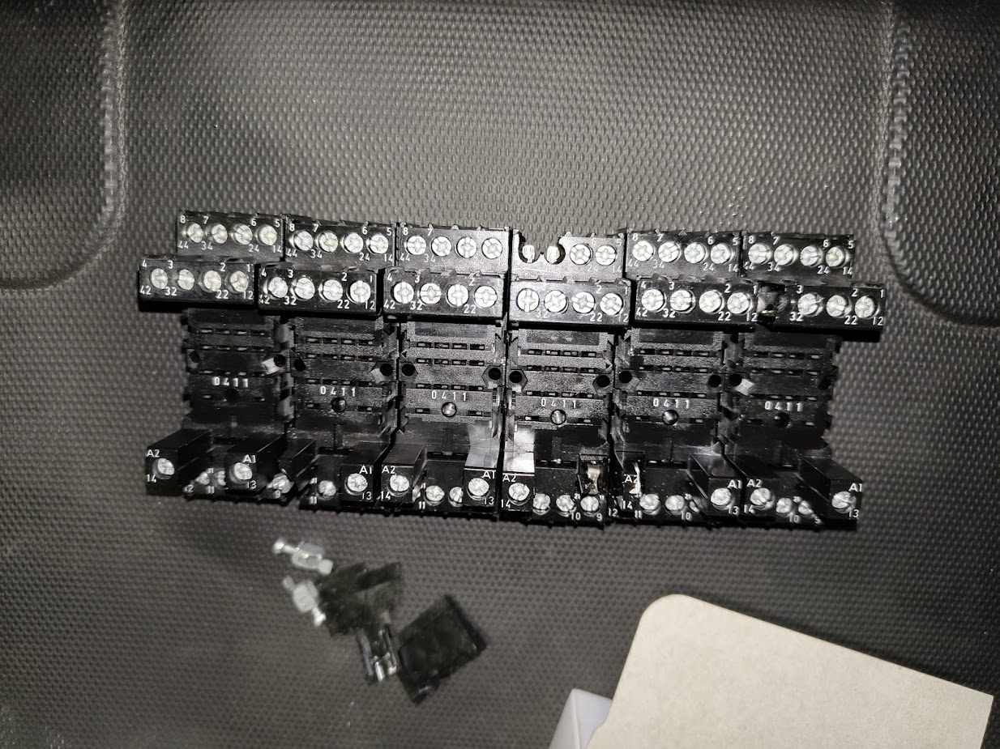
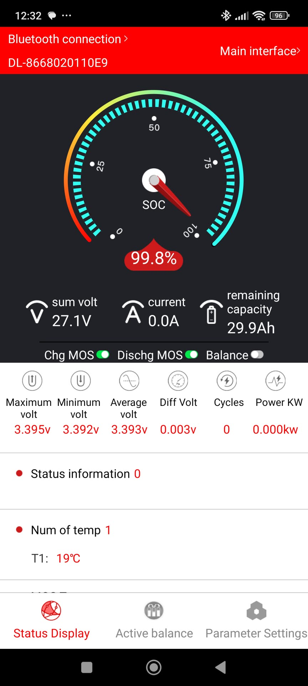

Proje Galerisi





Hidrolik makinelerde kablolama hataları, sensör arızaları ve programlama hataları analiz edilip çözüldü. Eski PLC, HMI ve kablolama revize edilerek programlar sıfırdan oluşturuldu; osiloskop ve multimetre ile sistematik problem çözüm yaklaşımı uygulandı.
30+ tesis üzerinde endüstriyel otomasyon sistemleri için alan teknik servis verdim. Kablaj arızaları, sensör yıkımları, programlama hataları ve sistem entegrasyon sorunlarını tespit ettim ve çözdüm. Osiloskop, multimetre ve tanı araçları kullanarak sistematik arıza giderme yaklaşımı benimsedim. Devreye alma ve ilk kurulum hizmetleri de sağladım.
Osiloskop ve multimetre ile yıkım noktasını tespit eden sistematik arıza giderme yaklaşımı ile problem çözümü.
Çeşitli endüstriyel tesislerde farklı otomasyon platformlarında 30+ tesis üzerinde alan servis deneyimi.
Yeni sistem kurulumu ve ilk devreye alma prosedürleri dahil kontrol, test ve doğrulama.
Operatörler için arıza giderme prosedür ve sistem kullanım rehberlerinin hazırlanması ve eğitim verilmesi.



Bu CV'deki tüm projeler Doka Mühendislik'in izniyle paylaşılmıştır. Gizlilik anlaşmalarına saygı göstermek amacıyla tescilli bilgiler, müşteri adları ve hassas teknik ayrıntılar genelleştirilmiştir.